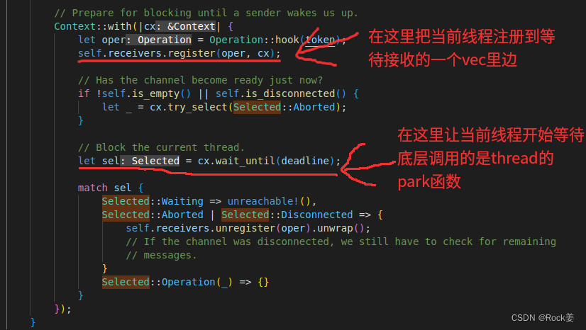
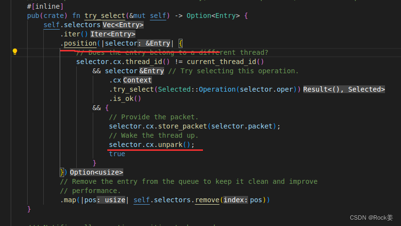
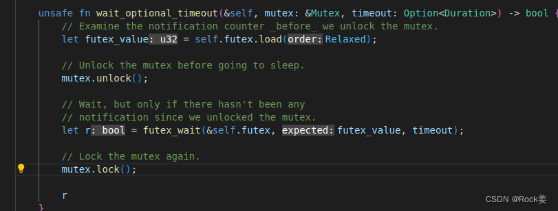
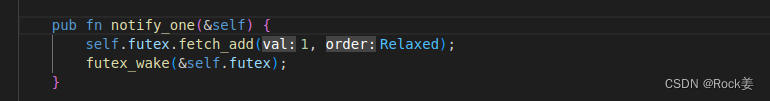

| 名字 | 版本号 |
|---|---|
| rust | 1.69.0 |
| OS | ubuntu 22.04 |
问题分析
既然是线程池，必定涉及到线程之间的数据交换，数据共享等问题。所以我们先罗列被选方案：
- 通过mpsc实现线程彼此之间的交互。
- 通过std::sync::Condvar实现线程之间的交互。
- 通过thread::park()与Thread.unpark()来实现线程之间的交互。
具体分析
- 通过mpsc实现线程彼此之间的交互是可行的。虽然mpsc允许生产者可以有多个，消费者只有一个。我们把线程池当作消费者，当然会有多个可能的生产者了。这个消费模式是完全匹配的。
- 通过std::sync::Condvar的实现，也是可行的。它的wait函数会释放当前线程的锁，notify_one或者notify_all函数会让线程从wait处继续执行。
- 通过thread::park()与Thread.unpark()两个函数来实现线程之间的交互。这里有一个问题就是park()函数不会释放当前线程持有的锁(对不起java用多了，我会说成是线程持有的锁，同样也更好理解，其实底层的实现是通过系统调用，线程并不会持有锁)。所以说，如果强行使用park()与unpark()函数来实现线程之间的交互是可行的，但是会失去操作变量的原子性，因为必须在锁drop以后，才可以park，否则其他线程将永远无法获得锁。但是drop与park之间由于，cpu乱序等各种原因，可能执行更多的其他指令，无法保证操作的原子性，所以这种方式临时放弃。我不否认可以通过其他方式解决这个问题，但是我们比的是性能，此种实现方式没有可比性。故放弃。
- 我们通过Mutex互斥锁即可，不需要使用RwLock。
测试场景
我们通过一个比较复杂的计算当作一个任务，让线程池执行一百万次这个任务。看看不同实现方式实现的线程池执行完这一百万次所消耗的总时间对比。
测试场景-实现分析
在这里，我们简单的一个任务使用一个闭包函数表示：
let task = move || {
let a = 3;
let b = 2;
let c = 7;
for _ in 0..10 {
let r = a*b/c+a*b/c+a*b/c+a*b/c+a*b/c+a*b/c+a*b/c+a*b/c-a*b/c-a*b/c-a*b/c-a*b/c-a*b/c-a*b/c-a*b/c-a*b/c-a*b/c-a*b/c-a*b/c;
}
};我们还需要在整个线程池的的执行过程中，注入一个测试对象当线程池执行完所有需要的任务的时候，需要一个打印性能测试的结果。 这里我们使用一个struct: 由于需要在线程内使用，所以FinishTest的部分变量使用了RefCell包裹，需要在县城内作变动。
struct FinishTest {
count: RefCell<u32>,
max: u32,
start_time: RefCell<SystemTime>,
}
impl FinishTest {
fn start(&mut self) {
self.start_time = RefCell::new(SystemTime::now());
}
fn isFinish(&self) -> bool {
let l = *self.count.borrow_mut();
match l == self.max {
true => true,
false => false,
}
}
fn increase(&self) {
*(self.count.borrow_mut()) += 1;
if self.isFinish() {
let elapsed = self.start_time.borrow_mut().elapsed().unwrap().as_millis();
println!("MPSC ThreadPool Finish cost time :{:?} ms",elapsed);
}
}
}不同的实现方式mpsc是channel的方式由rust内部实现通道。所以线程池值需要包含一个sender就可以了。
struct ThreadPool {
max_workers: i32,
workers: Vec<Worker>,
sender: mpsc::Sender<Message>,
}但是Condvar的实现线程池的方式，我们需要一个队列来缓冲线程池，这里我们采用rust标准库中提供的VecDeque来实现一个任务队列的缓冲区。毕竟生产端的压力大于消费端的话，任务也需要由地方放。这个队列，我们采用从尾部插入，从头部弹出的方式使用。
struct ThreadPool {
max_workers: i32,
workers: Vec<Worker>,
queue: Arc<(Mutex<(RefCell<VecDeque<Message>>, FinishTest)>, Condvar)>,
}最后还需要对线程池实现一个Drop的trait。毕竟整个应用停止之前，我们需要保证线程池中每一个线程都安全的停止。这里我们需要发送一个停止的信号给每一个线程。 这是mpsc的实现方式:
impl Drop for ThreadPool {
fn drop(&mut self) {
println!("drop----------------ThreadPool");
for _ in 0..self.max_workers {
self.sender.send(Message::Over).unwrap();
}
for w in self.workers.iter_mut() {
if let Some(t) = w.t.take() {
t.join().unwrap();
}
}
}
}这是Condvar的方式来实现: 因为Condvar的实现方案在给队列扔结束任务的时候，需要获得锁，然后扔任务，因为队列的对象，需要Mutex的保护才能保证原子操作。最后还需要注意的是：这里必须手动解锁，否则线程阻塞在当前函数以后，当前线程永远无法释放锁，其他线程也就永远无法获得锁并继续执行
impl Drop for ThreadPool {
fn drop(&mut self) {
println!("drop----------------ThreadPool");
let (lock, cond) = &*self.queue;
let mutex_guard = lock.lock().unwrap();
let (queue, ft) = &*mutex_guard;
for _ in 0..self.max_workers {
queue.borrow_mut().push_back(Message::Over);
cond.notify_one();
}
drop(mutex_guard);
for w in self.workers.iter_mut() {
if let Some(t) = w.t.take() {
t.join().unwrap();
}
}
}
}测试数据
我的CPU是i5-10210U。是4核8线程的。所以我们只测试四组数据，一个是4个线程，一个是8个线程，然后是16个线程，最后32个线程。同样的任务执行一百万次，次数不变。每一个测试数据都是执行三次取平均值。
| 4 | 8 | 16 | 32 | |
|---|---|---|---|---|
| mpsc | 1201ms | 1243ms | 1255ms | 1238ms |
| Condvar | 2607ms | 3665ms | 5122ms | 5336ms |
性能与底层原理分析
由于我的机器是ubuntu22.04。所以我就分析当前机器的底层源码了。 下面要讲锁的底层原理了。由于我使用的是linux系统，所有有必要先讲一个futex。 futex 全称 fast user-space locking ，快速用户空间互斥锁。作为linux内核中一种基本的同步原语，它提供了非常快速的无竞争锁获取和释放，用于构建复杂的同步结构：互斥锁、条件变量、信号量等。由于 futex 的一些机制和使用过于复杂，glibc 没有为 futex 提供包装器，需要通过syscall使用这个锁。
mpsc交互方式底层执行过程分析
加锁
首先系统调用最多的是Mutex的lock。我们来详细的看一下lock函数。也就是加锁流程。
- std::sync::Mutex下包裹的是一个sys::Mutex。在这个sys::Mutex内部由一个当前锁的状态futex，
- 0代表未上锁
- 1代表锁住了，当前锁上没有其他线程的等待
- 2代表锁住了，当前锁上由其他线程的等待
- 那么在调用lock函数的时候，首先会通过cas的方式(对不起cas这个词又是从java底层带过来的)，也就是说它会通过原子的方式给变一个变量的值，这个值就是刚才所说的sys::Mutex的状态值futex。如果futex为0则把当前值修改为1，否则修改失败。---也就是说如果futex状态为1代表当前锁有一个线程持有，但是没有其他线程来竞争锁。
- 如果修改失败，证明当前锁已经有线程持有，因为futex值不等于0，所以cas操作失败。这个时候调用sys::Mutex.lock_contended函数。这个函数内首先进行了一个自旋的等待，自旋的次数为100次，在这100次的自旋转过程中，每一次都会判断锁的状态，如果锁已经被释放，则马上停止自旋。或者锁的futex状态变成2，证明已经有2个以上的线程抢锁了，所以没必要再自旋等待了，毕竟循环也会消耗cpu资源。但是自选的目的也是考虑到，当只有一个线程抢锁的时候，自旋以下，某则系统调用加锁会有一个用户态和内核态的切换消耗，这个消耗更大。
- 从自旋出来以后会再次通过cas的方式判断futex时候为0，如果是则修改为1并返回，否则继续。
- 然后进入一个无限循环，首选会通过原子的方式修改futex状态为2。
- 然后在这个循环内调用一个futex_wait的函数进行加锁。在这个函数内会通过一个syscall来调用系统底层的逻辑来等待。这里用的就是linux系统底层的futex互斥锁。
libc::syscall(
libc::SYS_futex,
futex as *const AtomicU32,
libc::FUTEX_WAIT_BITSET | libc::FUTEX_PRIVATE_FLAG,
expected,
timespec.as_ref().map_or(null(), |t| t as *const libc::timespec),
null::<u32>(), // This argument is unused for FUTEX_WAIT_BITSET.
!0u32, // A full bitmask, to make it behave like a regular FUTEX_WAIT.
)解锁
我们再来看解锁流程。既然是Mutex锁，Mutex锁在离开作用于的是会会drop，那么在drop的时候就会解锁。解锁是在MutexGuard内部。 7. sys::Mutex的unlock函数内首先会修改当前锁状态futex为0。 8. 然后调用wake函数，唤醒等待线程。 9. 这里调用的是futex_wake函数，函数内同样是一个syscall。
pub fn futex_wake(futex: &AtomicU32) -> bool {
let ptr = futex as *const AtomicU32;
let op = libc::FUTEX_WAKE | libc::FUTEX_PRIVATE_FLAG;
unsafe { libc::syscall(libc::SYS_futex, ptr, op, 1) > 0 }
}如果是唤醒所有则是
pub fn futex_wake_all(futex: &AtomicU32) {
let ptr = futex as *const AtomicU32;
let op = libc::FUTEX_WAKE | libc::FUTEX_PRIVATE_FLAG;
unsafe {
libc::syscall(libc::SYS_futex, ptr, op, i32::MAX);
}
}- 被唤醒的线程会重新继续走函数sys::Mutex.lock_contended，在这个函数中的无限循环中，还是优先通过自旋，然后直接修改锁为 但是这里是唤醒一个线程。至于锁是如何排队的需要看linux内核源码了，小编在这里只是讨论rust，还不是讨论futex锁的时候，所以只说到这里。
等待接收recv
mpsc底层使用了一个状态机(Selected)代表的mpsc通道通信的状态，使用的是thread的park与unpark来作的线程交互。

这里底层使用的还是thread的park函数。再往下追就还是一个syscall的futex，进行等待，阻塞当前线程。发送消息send

这里会调用Vec的position函数。这个函数的闭包只要不返回false会一直循环到Vec集合内部的所有元素。这个Vec集合也是刚刚recv一端注册到这里的这个集合。那么在这里有三级判断，- 判断当前线程不能等于注册到集合内的线程(说白了就是发送者的线程不能等于接收者的线程)。
- 判断集合当前元素的线程的Selected状态是不是Waiting状态，如果是则修改为Operation状态。
- 直接调用集合当前元素的线程的unpark函数唤醒当前线程。 这个unpark函数底层，调用的还是syscall的futex的唤醒。
Condvar交互方式底层执行过程分析
wait
对于这种多线程交互方式，加锁与解锁就不用分析了，因为刚才已经分析过了。我们接下来直接分析一下Condvar的。 它的wait比较复杂，我们详细的来看一下。

- 优先拿到了当前锁的Mutex对象，然后调用的我们现在看到的这个wait函数。
- 在这个函数里边，先解锁当前线程，然后开始等待阻塞当前线程。(注意：这里也是为了释放当前锁的持有状态，这里更不用说了还是一个syscall，前面的mpsc的recv阻塞的时候可没有释放锁。)
- 当然不用说了锁的状态还是一个syscall的futex，进行等待，阻塞当前线程。
- 当然，当然更不用说解锁以后是一个Mutex的lock加锁，这个加锁过程我们刚才已经说过了。(在说白一点，这里等待过后与加锁之前也很有可能被其他线程加锁成功，当前线程同样也会在这个lock的时候阻塞住)
notify

第一：先说这个futex.fetch_add。让自己本身的这个futex自增1。保证下次唤醒的不再是当前的这个线程。 第二：还是一个syscall的futex唤醒。系统分析比较
- mpsc: 由于mpsc的recv阻塞不会释放Mutex锁，所以其他所有线程都会阻塞到其他线程的lock处，唤醒以后其他线程可以通过获得锁，继续recv阻塞持续执行。说白了整个消费循环体总体算上是三次syscall。
- Condvar: 这里mpsc的交互方式复杂在于Condvar的wait。它多了一个解锁和再加锁的过程。相比较之下整个消费循环体是五次syscall。
系统分析
第一：除系统调用以外的代码逻辑几乎可以忽略不计，毕竟没有过多的递归调用，也没有过多的循环执行。 第二：通过刚才的系统分析比较再加上刚才的测试数据不难分析出，当执行线程数量等于当前CPU数量的时候消耗较小这个时候Condvar的交互方式比mpsc的交互方式多出来的就是syscall的系统调用开销，毕竟用户态和内核态的交互消耗很大，这个地球人都知道。 第三：由于执行线程个数的增加，执行的线程数量逐渐会比当前系统CPU数量多，增加了CPU彼此之间的上下文切换的消耗，线程比当前系统的CPU核心数月多上下文切换的耗时越大。